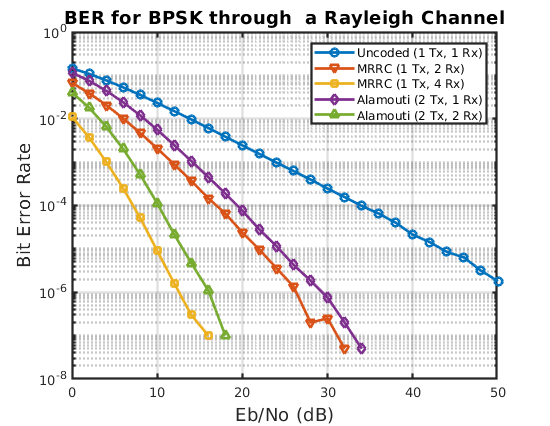

Contents
space-time diversity via Alamouti Codes
wireless link simulation over rayleigh flat-fading channel
clc; clear all;
simulation parameters
% modulation order M = 2; % bits per symbol k = log2(M); % instantiating modulators pskmod = comm.PSKModulator(M,0); pskdemod = comm.PSKDemodulator(M,0); EbNo = 0:2:50; snr = EbNo + 10*log10(k); % messsage length N = 1e6; % number of iterations per simulaton n_iter = 20; % init ber vectors ber_bpsk = zeros(n_iter, length(snr)); ber_mrrc2 = zeros(n_iter, length(snr)); ber_mrrc4 = zeros(n_iter, length(snr)); ber_alamouti2 = zeros(n_iter, length(snr)); ber_alamouti4 = zeros(n_iter, length(snr)); % generating Rayleigh flat-fading channels fd = 10; raychan1 = rayleigh(fd, N); raychan2 = rayleigh(fd, N); raychan3 = rayleigh(fd, N); raychan4 = rayleigh(fd, N);
simulation 1 - uncoded bpsk
for ii=1:n_iter % init v_demod = zeros(N,length(snr)); v_rx = zeros(N,length(snr)); % generate random message v = randi([0 M-1],N,1); % modulate v_mod = step(pskmod,v); % transmit through channel v_raychan = raychan1.*v_mod; for jj=1:length(snr) v_rx(:,jj) = awgn(v_raychan,snr(jj),'measured')./raychan1; v_demod(:,jj) = step(pskdemod,v_rx(:,jj)); end % compute ber [~,ber1] = biterr(v_demod,v); ber_bpsk(ii,:) = ber1; end ber_bpsk = mean(ber_bpsk,1);
simulation 2 - bpsk w/ mrrc (2 rx)
% init combiner = zeros(N,length(snr)); v_demod = zeros(N,length(snr)); % generate random message v = randi([0 M-1],N,1); % modulate v_mod = step(pskmod,v); % transmit through channel h = raychan1; v_raychan = [raychan1.*v_mod, raychan2.*v_mod]; for ii=1:n_iter for jj=1:length(snr) v_rx = awgn(v_raychan,snr(jj),'measured'); % mrrc combiner(:,jj) = sum(conj(h).*v_rx,2)./sum(h.*conj(h),2); % demodulate v_demod(:,jj) = step(pskdemod,combiner(:,jj)); end % compute ber [~,ber2] = biterr(v_demod,v); ber_mrrc2(ii,:) = ber2; end ber_mrrc2 = mean(ber_mrrc2,1);
simulation 3 - bpsk w/ mrrc (4 rx)
% init combiner = zeros(N,length(snr)); v_demod = zeros(N,length(snr)); % generate random message v = randi([0 M-1],N,1); % modulate v_mod = step(pskmod,v); % transmit through channel v_raychan1 = raychan1.*v_mod; v_raychan2 = raychan2.*v_mod; v_raychan3 = raychan3.*v_mod; v_raychan4 = raychan4.*v_mod; h = [raychan1,raychan2, raychan3, raychan4]; v_raychan = [v_raychan1, v_raychan2, v_raychan3, v_raychan4]; for ii=1:n_iter for jj=1:length(snr) v_rx = awgn(v_raychan,snr(jj),'measured'); % mrrc combiner(:,jj) = sum(conj(h).*v_rx,2)./sum(h.*conj(h),2); % demodulate v_demod(:,jj) = step(pskdemod,combiner(:,jj)); end % compute ber [~,ber3] = biterr(v_demod,v); ber_mrrc4(ii,:) = ber3; end ber_mrrc4 = mean(ber_mrrc4,1);
simulation 4 - bpsk w/ Alamouti coding (2 tx, 1 rx)
% init combiner = zeros(N,length(snr)); v_decoded = zeros(N,length(snr)); v_demod = zeros(N,length(snr)); % generate random message v = randi([0 M-1],N,1); % modulate v_mod = step(pskmod,v); % alamouti coding v_coded=zeros(N,2); s1=v_mod(1:2:end); s2=v_mod(2:2:end); v_coded(1:2:end,:)=sqrt(0.5)*[s1,s2]; v_coded(2:2:end,:)=sqrt(0.5)*[-conj(s2),conj(s1)]; % transmit h = sqrt(1/2)*kron([raychan1(1:N/2), raychan2(1:N/2)], [1;1]); v_raychan = h.*v_coded; for ii=1:n_iter for jj=1:length(snr) v_rx = awgn(v_raychan,snr(jj),'measured'); combiner(:,jj) = sum(v_rx,2); % alamouti decoding u1 = combiner(1:2:end,jj); u2 = combiner(2:2:end,jj); u = [kron(u1,[1;1]), kron(conj(u2),[1;1])]; h_rx = zeros(N,2); h1=h(1:2:end,1); h2=h(1:2:end,2); h_rx(1:2:end,:) = [conj(h1), h2]; h_rx(2:2:end,:) = [conj(h2), -h1]; v_decoded(:,jj) = sum(h_rx.*u,2)./sum(h_rx.*conj(h_rx),2); % demodulate v_demod(:,jj) = step(pskdemod,v_decoded(:,jj)); end % compute ber [~,ber4] = biterr(v_demod,v); ber_alamouti2(ii,:) = ber4; end ber_alamouti2 = mean(ber_alamouti2,1);
Simulate BPSK through rayleigh channel w/ Alamouti (2 Tx, 2 Rx)
% init combiner = zeros(N,2,length(snr)); v_decoded = zeros(N,length(snr)); v_demod = zeros(N,length(snr)); % generate random message v = randi([0 M-1],N,1); % modulate v_mod = step(pskmod,v); % alamouti coding v_coded=zeros(N,4); s1=v_mod(1:2:end); s2=v_mod(2:2:end); v_coded(1:2:end,:)=sqrt(1/2)*[s1,s2, s1,s2]; v_coded(2:2:end,:)=sqrt(1/2)*[-conj(s2),conj(s1), -conj(s2),conj(s1)]; % transmit h = sqrt(.5)*kron([raychan1(1:N/2), raychan2(1:N/2),... raychan3(1:N/2), raychan4(1:N/2)], [1;1]); v_raychan = h.*v_coded; for ii=1:n_iter for jj=1:length(snr) v_rx = awgn(v_raychan,snr(jj),'measured'); % combiner combiner(:,:,jj) = [sum(v_rx(:,1:2),2), sum(v_rx(:,3:4),2)]; % alamouti decoding u11 = combiner(1:2:end,1,jj); u21 = combiner(2:2:end,1,jj); u12 = combiner(1:2:end,2,jj); u22 = combiner(2:2:end,2,jj); u = [kron(u11,[1;1]),kron(conj(u21),[1;1]),... kron(u12,[1;1]),kron(conj(u22),[1;1])]; h_rx = zeros(N,4); h1=h(1:2:end,1); h2=h(1:2:end,2); h3=h(1:2:end,3); h4=h(1:2:end,4); h_rx(1:2:end,:) = [conj(h1),h2, conj(h3),h4]; h_rx(2:2:end,:) = [conj(h2),-h1, conj(h4),-h3]; v_decoded(:,jj) = sum(h_rx.*u,2)./sum(h_rx.*conj(h_rx),2); % demodulate v_demod(:,jj) = step(pskdemod,v_decoded(:,jj)); end % compute ber [~,ber5] = biterr(v_demod,v); ber_alamouti4(ii,:) = ber5; end ber_alamouti4 = mean(ber_alamouti4);
Plot
semilogy(snr,ber_bpsk,'-o',snr,ber_mrrc2,'-v',snr,ber_mrrc4,'-s',... snr,ber_alamouti2,'-d',snr,ber_alamouti4,'-^', 'LineWidth', 2); title('BER for BPSK through a Rayleigh Channel','FontSize', 14 ); grid on; xlabel('Eb/No (dB)', 'FontSize', 14); ylabel('Bit Error Rate', 'FontSize', 14); legend('Uncoded (1 Tx, 1 Rx)','MRRC (1 Tx, 2 Rx)',... 'MRRC (1 Tx, 4 Rx)', 'Alamouti (2 Tx, 1 Rx)',... 'Alamouti (2 Tx, 2 Rx)'); ax = gca; ax.LineWidth = 1.75;